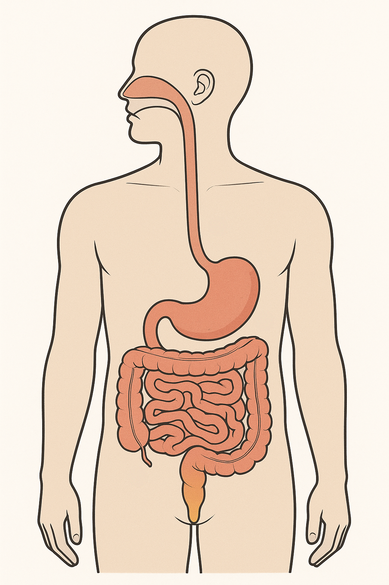

Escriu les parts del sistema digestiu que recordes i, si pots, per a què serveix cadascuna:

1 2 3 4 5 6 7| # | Nom de l'òrgan | Funció principal |
|---|---|---|
| 1 | Masticació + amilasa salival | |
| 2 | ||
| 3 | Àcid (HCl) + pepsina → quimo | |
| 4 | Neutralitza l'àcid (bicarbonat) i hi arriba la bilis | |
| 5 | ||
| 6 | Absorbeix aigua · microbiota | |
| 7 |
A l'estómac el menjar ja està desfet i convertit en quimo. Per quina raó, doncs, els nutrients NO passen a la sang allà i sí que ho fan a l'intestí prim? Dona dos motius diferents.
| Tram | Longitud real | Longitud al cabdell (mm) | Funció principal |
|---|---|---|---|
| Esòfag | ~25 cm | 2,5 mm | |
| Intestí prim | ~6 m | Absorció de nutrients | |
| Intestí gros | ~1,5 m | ||
| TOTAL | — | ||
| Fase | Substàncies | Funció | La teva observació |
|---|---|---|---|
| Boca | Amilasa salival + masticació | Midó → maltosa | |
| Estómac | HCl + pepsina | ||
| Duodè | Bicarbonat + bilis | Neutralitza l'àcid; emulsiona greixos | |
| Intestí prim | Paret amb vellositats |
Completa el recorregut d'una molècula de glucosa del pa des que travessa la paret de l'intestí prim fins que s'hi obté energia:
| Pas | On és la glucosa | Què hi passa |
|---|---|---|
| 1 | Dins l'intestí prim | Travessa la paret de la vellositat |
| 2 | Capil·lar de la vellositat | |
| 3 | La sang la reparteix per tot el cos | |
| 4 | Dins una cèl·lula del múscul | |
| 5 | Glucosa + O₂ → CO₂ + H₂O + ATP |
La Mercè surt a córrer sense haver dinat. A mitja cursa nota les cames pesades. Explica-ho fent servir la cadena de dalt: quin pas falla i per quina raó això li afecta els músculs?
Ajuden a digerir la fibra, produir vitamines K i B12 i protegir-nos de patògens.
Per quina raó prendre antibiòtics pot provocar diarrea?
Pista: els antibiòtics maten bacteris… i a l'intestí n'hi ha de beneficiosos.
La forma de la femta depèn del temps que ha estat a l'intestí gros i de l'aigua que aquest n'ha absorbit. Tipus 3-4: temps normal. Tipus 1-2: hi ha estat molt de temps i s'ha absorbit molta aigua. Tipus 6-7: hi ha passat molt de pressa i gairebé no se n'ha absorbit.
Per a cada persona, escriu quin tipus de Bristol esperaries i per quina raó:
| Cas | Tipus esperat | Per quina raó |
|---|---|---|
| La Mercè fa una setmana que quasi no beu aigua i menja poca verdura | ||
| En Youssef ha passat tot el cap de setmana amb un virus intestinal | ||
| L'Aya menja fruita, verdura i llegums cada dia i beu 1,5 L d'aigua |
Observa la teva femta i memoritza a quin tipus de l'escala de Bristol s'assembla (no cal escriure-ho). A classe ho respondràs de manera anònima.
És una observació personal: no es pot fer amb cap IA.